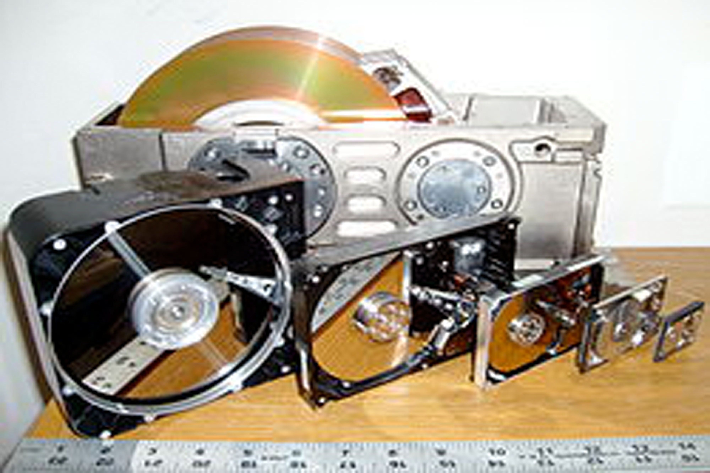

Que es informática?
En la actualidad, esta evolución en la informática nos ha permitido armar un mundo a nuestra medida, en donde todo puede ser medido, catalogado y puesto en su lugar. Y aunque parezca que estamos hablando de alguna novela distópica, lo cierto es que en estos tiempos la tecnología se usa mucho más para el bien que para el mal. Entre las ventajas que nos ofrece la informática en la actualidad se encuentran el control aéreo, la investigación médica y científica, las comunicaciones y un largo etcétera.
Lo cierto es que sin los avances que ha habido en términos de informática en los últimos años, tanto en hardware como en software, nada de esto sería posible. La informática avanza, las investigaciones se agilizan, se crean nuevos dispositivos y con ellos la informática vuelve a avanzar. Afortunadamente, este es el ciclo de evolución que tantos buenos resultados está dando a la Humanidad.
Su historia
Esto lo demuestra la enorme cantidad de dispositivos que tenemos en uso en nuestro hogar, en el trabajo, en el auto o incluso como parte de nuestra vestimenta, que crecen a un ritmo vertiginoso, y que son cada vez más poderosos y capaces. Todos estos dispositivos nos permiten hacer cosas que antes no podíamos, y hasta incluso pueden ser beneficiosos para la salud.
¿Para qué sirve la informática?
Como mencionamos, la informática es la ciencia desarrollada con el fin de estudiar la información y los procedimientos para tratarla, transmitirla y automatizarla. En términos más humanos podría decirse que la informática es el vehículo que nos permitió llegar a lugares que sin la ayuda de computadoras y sistemas de información hubiéramos tardado muchos más años en alcanzar.
La informática es una ciencia que engloba mucha de las tecnologías que la humanidad ha creado con el fin de hacer un poco más sencilla su relación con el medio que lo rodea. El hecho de nutrirse de tan variados orígenes, permite que se pueda aplicar a todo tipo de escenarios, e incluso mejorar o extender la gama de aplicaciones en las que puede asistir la ciencia de la que se desarrolló.